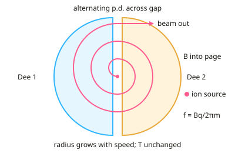

A-level Physics Year 13 · Topic 11
Particle physics
Particle physics explores the fundamental building blocks of matter and the forces between them.
We will look at particle accelerators and detectors, antiparticles, annihilation and pair production, and the quark model of hadrons.
Then we study leptons, conservation laws, exchange particles and Feynman diagrams, beta decay and the weak interaction, and the evidence for quarks from deep inelastic scattering.
- 8 subtopics
- 344 questions
- Free: 11.1 notes and 10 questions
In this topic
- 11.1Particle accelerators and detectors: linac, cyclotron and synchrotronFree below · 69 questions
- 11.2Antiparticles, pair production and annihilationOpen in Full Marks · 22 questions
- 11.3Hadrons: baryons, mesons and the quark modelOpen in Full Marks · 24 questions
- 11.4Leptons, neutrinos and the Standard ModelOpen in Full Marks · 27 questions
- 11.5Conservation laws in particle interactions (charge, baryon number, lepton number, strangeness)Open in Full Marks · 55 questions
- 11.6Fundamental interactions, exchange particles and Feynman diagramsOpen in Full Marks · 29 questions
- 11.7Beta decay and the weak interaction in the quark modelOpen in Full Marks · 56 questions
- 11.8Evidence for quarks: deep inelastic scatteringOpen in Full Marks · 62 questions
11.1 · Free notes
Particle accelerators and detectors: linac, cyclotron and synchrotron

Key points
- Accelerators use electric fields to raise the kinetic energy of charged particles. A particle of charge q accelerated through a p.d. V gains E = qV, where 1 eV = 1.60×10⁻¹⁹ J. A magnetic field does no work because the force is perpendicular to the velocity, so it only changes direction.
- Linac (linear accelerator): a straight line of drift tubes connected alternately to the two terminals of an alternating p.d. supply. The particle is accelerated in the gaps between tubes, and inside each tube there is no electric field, so its speed is constant.
- The drift tubes get longer along a linac. The speed increases but the supply frequency is fixed, so the particle must spend half a period in each tube: L = v × T/2 = v/(2f).
- Cyclotron: two hollow D-shaped electrodes (dees) in a vacuum, placed in a uniform magnetic field perpendicular to the dees. An alternating p.d. across the gap accelerates the particle each time it crosses. The path is a spiral of increasing radius, r = mv/(Bq).
- The time for one semicircle is t = πm/(Bq), which is independent of speed and radius. So the supply frequency f = Bq/(2πm) stays constant and the particle always arrives at the gap in phase with the p.d.
- Cyclotron limit: near the speed of light the particle's relativistic mass increases, so the period lengthens and the particle falls out of step with the supply. This limits the maximum energy of a cyclotron to a few tens of MeV for protons.
- Synchrotron: particles travel in a fixed-radius ring held by bending electromagnets and are accelerated by radio-frequency cavities. B and the supply frequency are increased in step with the particle's momentum (r = p/(Bq), so B ∝ p for fixed r). The LHC has a 27 km circumference.
- All accelerators work in a vacuum so that particles do not collide with air molecules. Charged particles moving in circles lose energy as synchrotron radiation. This loss is very large for light electrons, so electrons are usually accelerated in linacs.
- Collider vs fixed target: in a head-on collider the total momentum is zero, so all the kinetic energy is available to create new particles (mass-energy). With a stationary target, much of the energy remains as kinetic energy of the products.
- Detectors: charged particles leave tracks by ionisation in a bubble or cloud chamber, or in modern tracking detectors. In a magnetic field the radius of curvature r = p/(Bq) gives the particle's momentum. The direction of curvature (Fleming's left-hand rule) gives the sign of the charge.
- Reading tracks: neutral particles (photons, neutrons) leave no track. Tighter curvature means lower momentum. A denser, thicker track means more ionisation, i.e. a slower or more highly charged particle. Two oppositely curving tracks from a point with no incoming track suggest pair production.
In more detail
- Worked cyclotron frequency: for protons in a 1.5 T field, f = Bq ÷ 2πm = 1.5 × 1.6 × 10⁻¹⁹ ÷ (2π × 1.67 × 10⁻²⁷) = 23 MHz.
- Worked radius: r = mv/(Bq); as the particle speeds up, its radius increases, so it spirals outwards in a cyclotron.
- Synchrotron at the LHC: protons travel in a 27 km ring, with field strength increasing as their energy increases to keep the radius fixed.
- Reading bubble-chamber tracks: the direction of curvature shows the sign of charge; spirals inwards as particles lose energy; neutral particles leave gaps.
Practice
Particle accelerators and detectors: linac, cyclotron and synchrotron: 10 questions
Pick an answer to check it, or open the answer for the explanation.
1. A linac is driven at 5.0 MHz. What length of drift tube lets a proton moving at 4.0×10⁶ m s⁻¹ cross it in exactly half a period of the supply?
- 2.5 m
- 0.80 m
- 0.40 m
- 0.20 m
Show answer
C: 0.40 m. Time in the tube = T/2 = 1/(2f) = 1.0×10⁻⁷ s. Length = v × t = 4.0×10⁶ × 1.0×10⁻⁷ = 0.40 m.
2. Why does a charged particle move at constant speed inside a linac drift tube?
- The conducting tube shields the inside from the electric field
- Particles lose speed to collisions with the tube walls
- The tube is an insulator, so no current flows
- A magnetic field inside the tube cancels the electric force
Show answer
A: The conducting tube shields the inside from the electric field. The conducting tube screens its interior from the electric field, so no force acts and the speed is constant. Acceleration happens only in the gaps between tubes.
3. Protons circulate in a cyclotron with a uniform field of 1.5 T. What is the frequency of the alternating p.d.? (m = 1.67×10⁻²⁷ kg, e = 1.60×10⁻¹⁹ C)
- 144 MHz
- 23 MHz
- 11 MHz
- 46 MHz
Show answer
B: 23 MHz. f = Bq/(2πm) = (1.5 × 1.60×10⁻¹⁹)/(2π × 1.67×10⁻²⁷) = 2.3×10⁷ Hz. Leaving out the 2π gives the incorrect 144 MHz.
4. In a cyclotron the alternating p.d. can have a constant frequency even though the protons speed up. Why?
- The gap between the dees narrows as protons speed up
- The time for each semicircle does not depend on speed or radius
- The magnetic field is increased as the radius grows
- The speed of the protons stays constant
Show answer
B: The time for each semicircle does not depend on speed or radius. Half-period t = πm/(Bq) is independent of v and r. Faster protons travel on larger semicircles, so each takes the same time (while v is much less than c).
5. What mainly limits the maximum energy of protons in a cyclotron?
- The p.d. across the gap falls as the radius increases
- Relativistic mass increase lengthens the period, so protons fall out of step
- The magnetic force does work and slows the protons
- The proton charge decreases at high speed
Show answer
B: Relativistic mass increase lengthens the period, so protons fall out of step. At speeds near c the mass increases, so T = 2πm/(Bq) grows. The protons then arrive at the gap out of phase with the alternating p.d. and stop gaining energy.
6. A proton (m = 1.67×10⁻²⁷ kg) moves at 1.0×10⁷ m s⁻¹ perpendicular to a 0.80 T field. What is the radius of its path?
- 0.26 m
- 0.13 m
- 1.3 m
- 0.065 m
Show answer
B: 0.13 m. r = mv/(Bq) = (1.67×10⁻²⁷ × 1.0×10⁷)/(0.80 × 1.60×10⁻¹⁹) = 0.13 m.
7. In a synchrotron the orbit radius is fixed. As the protons gain momentum, what must happen to the magnetic field strength?
- It must decrease so the protons are not over-deflected
- It must alternate in direction every half-turn
- It must increase in proportion to the momentum
- It can stay constant if the frequency is fixed
Show answer
C: It must increase in proportion to the momentum. From r = p/(Bq), a constant r requires B ∝ p. The field is ramped up in step with the increasing momentum of the particles.
8. Why are colliders used instead of fixed targets to create new heavy particles?
- Colliders produce particles with greater charge
- A stationary target cannot be hit by a beam
- Zero total momentum, so all kinetic energy can create new particles
- Neutral particles can be accelerated in colliders
Show answer
C: Zero total momentum, so all kinetic energy can create new particles. In a head-on collision with zero total momentum, none of the energy has to be kept as kinetic energy of the products, so all of it is available to create new mass.
9. In a bubble chamber in a field into the page, two tracks of equal radius curve in opposite senses from a point where no track enters. What is the likeliest event?
- Beta decay of a neutron
- Pair production by a gamma photon
- Alpha decay of a nucleus
- Annihilation of a proton and antiproton
Show answer
B: Pair production by a gamma photon. A neutral photon leaves no track. It creates e⁻ and e⁺, which have opposite charges and so curve oppositely, with equal momenta giving equal radii.
10. Two singly charged particles move in the same magnetic field. Track A has radius 6.0 cm and track B has radius 3.0 cm. How do their momenta compare?
- A and B have equal momentum
- A has twice the momentum of B
- A has half the momentum of B
- A has four times the momentum of B
Show answer
B: A has twice the momentum of B. p = Bqr. With B and q equal, p is proportional to r. A's radius is twice B's, so A's momentum is twice B's.
Keep going in Full Marks
Full Marks has 69 questions on Particle accelerators and detectors: linac, cyclotron and synchrotron (59 more than here), set out in practice levels. You also get notes and 3D models for all 8 subtopics of Particle physics, plus games, timed exams and past papers.
On your exam board
- OCR ATopic 6.4: Nuclear and particle physics
- OCR BTopic 6.2: Probing deep into matter
- EdexcelTopic 8: Nuclear and particle physics
Not in the AQA and Cambridge specifications.